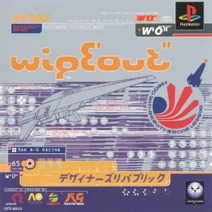

CoLD SToRAGE and others - Wipeout (PSX Trilogy) Soundtrack
I don't swear that often here, but I just want to say that I fucking LOVE Wipeout. The original game, a 1995 launch title for Sony's console wars curveball, the PlayStation, was a bold demonstration of 3D technology: racing with anti-gravity ships. As it was refined in its second and third installments, the series became a defining part of the PlayStation. Sony's main marketing strategy, which worked a treat, was that Sega and Nintendo were for kids, but the PlayStation was for people who took ecstasy… and cool kids. And front and centre in that campaign, originally, was Wipeout. Its advertising campaigns made it clear what you were getting into straight away: the original boasted the tagline "A Dangerous Game", while the follow-up featured my personal favourite, "Slow Minds Fear It". That feeling of racing through an abandoned train station or an earthquake-shattered track at 300mph was unchallenged by anything else - the deepest focus was required: left, hold off the brakes, hairpin to the right, overtake them, pitch up, get around those mines… a blinding sensation of exhilaration as the game holds your full and complete attention, with any less focus making it impossible to win. The absurd speeds, the fierce tracks with blind corners and over 180 degree turns, the real risk that your craft could literally explode if you're not careful, that rush when you just get around a corner, with sparks flying as your craft scrapes the edge of the track, the frenzied, scattered design courtesy of the Designers Republic… but most of all, the music. Again the second installation takes the cake for me: the screaming, ever aggressive and unrelenting sounds of what big beat was before "Brimful of Asha" and that bloody Elvis remix - tones harsh enough to instinctively express danger set over some nicked and thoroughly chopped 70s drum break, sounds flying by in both ears with no clear origin apart from some bastard's mixing desk, and finally topped off with a vocal with no meaning apart from expressing violence ("Atom Bomb") and danger ("Firestarter"). In my mind, this is where game design, graphic design, and sound design all reached their peak simultaneously.
But enough glazing a thirty-year old game, let's talk about its music in specifics. The original Wipeout (1995) featured music made by the developer Psygnosis' in-house music man: Tim Wright, also known as CoLD SToRAGE. Wright had never produced techno before, and in fact he hated the genre. He tried to do what he was asked to, but struggled because of his inexperience in the genre. However, after the dev team took him to a nightclub to experience techno as it was meant to be experienced, Wright suddenly got how to make a techno tune (by the way, if you want to hear more there is an excellent interview with him which goes into further detail about the soundtrack's origin - you can find it here). He produced eight songs for the soundtrack, with the key 'single' track being "Messij", a song so good I ripped it off and made the best song of my music career (see Concourse in the Music section). He also produced the music for the game's intro cutscene. But since the game was originally envisioned by lead designer Nick Burcombe through the means of "Super Mario Kart with rave music in the background", the team felt they needed some songs from producers who were really in the scene. Burcombe's first choice was the Prodigy, but the problem he had was that the general perception of video games at the time was as something for kids, and also something where you had to make your music work with a console's internal sound chip. It was tough getting the message across to bands and labels that Wipeout was a cool new thing for adults, and that they could have their music stored at CD quality. The Prodigy turned down the offer, so Burcombe went to his second choice, Orbital, who accepted and made "Wipeout (P.E.T.R.O.L.)", which was originally exclusive to the soundtrack before being included on their seminal 1996 album In Sides. Two other artists, Leftfield and the Chemical Brothers, contributed a pre-existing track each. Now - there are some variations between versions of the game. The European PlayStation copies of the game included all of these songs, but the North American release lacked the licensed music and only had the CoLD SToRAGE stuff. In addition, the port for the Sega Saturn replaced the licensed music with three tracks by composers Rob Lord & Mark Bandola. And, yes, I know I said this was only the PlayStation games, but I'd say a port of a PSX game counts (1998's largely forgotten Wipeout 64 is an entirely different game so we'll skip over that).
CD 1: Wipeout
| No. | Title | Artist | Game version | Length |
|---|---|---|---|---|
| 1 | Wipeout Intro | CoLD SToRAGE | All versions | 1:20 |
| 2 | Cairodrome | 5:15 | ||
| 3 | Cardinal Dancer | 5:22 | ||
| 4 | Cold Comfort | 5:05 | ||
| 5 | DOH-T | 5:15 | ||
| 6 | Messij | 5:16 | ||
| 7 | Operatique | 5:18 | ||
| 8 | Tentative | 5:26 | ||
| 9 | Transvaal | 5:07 | ||
| 10 | Afro Ride (Edit) | Leftfield | European PlayStation release | 6:26 |
| 11 | Chemical Beats | The Chemical Brothers | 4:50 | |
| 12 | Wipeout (P.E.T.R.O.L.) | Orbital | 6:16 | |
| 13 | Brickbat | Rob Lord & Mark Bandola | Sega Saturn release | 5:59 |
| 14 | Planet 9 | 4:43 | ||
| 15 | Poison | 5:18 | ||
| 78:49 |
"Afro Ride" was edited down for the soundtrack, but considering it wouldn't fit on if presented in its full length, I've left the edit as it is.
With a successful launch game made, developers Psygnosis were soon tasked by Sony to make a sequel, eventually titled Wipeout 2097, or Wipeout XL in the US because Americans are apparently unable to deduce that '2097' denotes the year the game takes place in and not that there were 2096 games in this franchise released beforehand. With the PlayStation already a proven success within a year, and licensed soundtracks now becoming something noticed in the music world, record labels suddenly began calling the developers and asking how they could get in on the action. Now basically without limits for the soundtrack, the team were free to request their favourite artists who they thought would soundtrack the game best: Underworld gave them an early cut of their track "Tin There", Fluke wrote their biggest hit "Atom Bomb" for the soundtrack (as well as another track titled "V6"), and the Future Sound of London contributed their then-upcoming single "We Have Explosive" and an original called "Landmass". Drum and bass artist Photek wrote two originals for the soundtrack, although only one was included, and the team even managed to sway the Prodigy over this time, with the instrumental version of their number one hit "Firestarter" being slipped on the soundtrack. Drum and bass group Source Direct wrote "2097", but the track was dropped from the soundtrack, and a remix of the aforementioned FSOL track "We Have Explosive" was used as the intro theme. So now we have a veritable compilation of goodies from the best of the scene, with some tracks being included on the actual game, and some on its soundtrack album, issued shortly before its release. The soundtrack album also included some tracks which were not written for the game and just kinda have the same vibe, so we'll leave those off (the first game also had a soundtrack album, but again it mainly consisted of songs the team liked rather than songs actually in the game).
CD 2: Wipeout 2097 (PlayStation)
| No. | Title | Artist | Game version | Length |
|---|---|---|---|---|
| 1 | We Have Explosive | The Future Sound of London | PlayStation release | 7:19 |
| 2 | Landmass | 4:29 | ||
| 3 | Atom Bomb (Straight 6 Instrumental Mix) | Fluke | 5:33 | |
| 4 | V Six | 5:19 | ||
| 5 | Dust Up Beats | The Chemical Brothers | 6:07 | |
| 6 | Loops of Fury | 4:41 | ||
| 7 | The Third Sequence | Photek | 4:48 | |
| 8 | Titan | Soundtrack album | 5:58 | |
| 9 | Tin There (Underworld Edit) | Underworld | PlayStation release | 6:08 |
| 10 | Firestarter (Instrumental) | The Prodigy | 4:39 | |
| 11 | 2097 | Source Direct | Soundtrack album | 5:35 |
| 12 | We Have Explosive (Herd Killing) | The Future Sound of London | PlayStation release | 5:42 |
| 13 | Atom Bomb (Atomix 1) | Fluke | Bonus track | 5:40 |
| 71:58 |
I've included the main mix of "Atom Bomb" as a bonus track because only a remix of the song was included on the soundtrack (game and album), and the original - which featured Wipeout-themed artwork (designed by the same designer as the Wipeout games) and a Wipeout-themed music video - I feel is criminal to leave off this set because of how good it is and how well it matches with the rest of the songs. Incidentally, if you like the sound of this kind of music, may I recommend "Setting Sun" by the Chemical Brothers, "Poison" by the Prodigy, and "Satan" by Orbital - in particular the version from the V96 Festival on the Satan Live EP, which is one of those songs which you think is absolutely amazing… and then the Amen break comes in.
Now, if you're a Wipeout fan, or even if you have been paying some attention to what you're reading, you might have noticed a lack of an appearance from the in-house man CoLD SToRAGE. Indeed, he was saved a spot on the soundtrack as a courtesy, for which he produced "Canada" (one of my personal favourites of his, especially that syncopated synth bit in the bridge), and then when an artist dropped out, he wrote "Body in Motion". Both of these were included on the PlayStation release of the game, but I didn't include them on the above tracklist because, as it turns out, those weren't the only songs he wrote for 2097. When the game was ported to PC, and then the Sega Saturn, the dev team (for a reason I can't figure out for certain) couldn't use any of the licensed music. My best guess is that they couldn't be bothered to sort out the licenses again and just went "it's a port, it doesn't matter". And so once again Tim Wright was tasked with writing the soundtrack to the game. This time, despite having ten tracks, it was a little more sparse of originals: it included two remixes of the previous game's stand-out track, "Messij", the aforementioned two numbers on the PlayStation soundtrack, and a remix of "Body in Motion". But still - five new songs for the ports.
CD 3: Wipeout 2097 (Saturn and PC)
| No. | Title | Artist | Game version | Length |
|---|---|---|---|---|
| 1 | Kinkong | CoLD SToRAGE | Saturn and PC releases | 4:31 |
| 2 | Plasticity | 3:55 | ||
| 3 | Messij Xtnd | 9:22 | ||
| 4 | Body in Motion | All releases | 5:15 | |
| 5 | Canada | 6:13 | ||
| 6 | Tenation | Saturn and PC releases | 2:42 | |
| 7 | Surgeon | 4:06 | ||
| 8 | Body Plus | 9:22 | ||
| 9 | Hakapik Murder | 4:08 | ||
| 10 | Messij Received | Saturn release | 4:18 | |
| 54:01 |
Now, luckily for you and me, Wright likes getting his music out there, and so Wipeout - The Zero Gravity Soundtrack, featuring all of his contributions to the soundtrack of both Wipeout and Wipeout 2097, is available on streaming services, Bandcamp, and vinyl! And on this compilation (and its Vol. 2 follow-up) there are a few unreleased numbers. Firstly, there are four short interludes which were made for 2097, "Argon", "Phloem", "Xenon", and "Xylem". But in addition, there is "God's Gift", a track written around the time 2097 was being made, but not included on any game in the end, and "Scratch Pad 1", written as the soundtrack to a 1996 Psygnosis demo reel (which I can't find anywhere online), and which features similar instrumentation to music from 2097. We can add these bonuses to the end of CD 3.
CD 3 continued
| No. | Title | Artist | Game version | Length |
|---|---|---|---|---|
| 11 | Argon | CoLD SToRAGE | All releases | 0:29 |
| 12 | Phloem | 0:24 | ||
| 13 | Xenon | 0:36 | ||
| 14 | Xylem | 0:25 | ||
| 15 | God's Gift | Bonus track | 4:42 | |
| 16 | Scratch Pad 1 | 9:11 | ||
| 69:39 |
The final Wipeout game released on the PlayStation came in 1999, and despite only being set 19 years after 2097, it was quite a radical shake-up in design. Gone were the shivering, visual noise-focused designs of 1996, and instead the Designers Republic produced minimalist designs for the logos and menus. And with big beat no longer the sound of high-speed racing (well, it was still gasping for air as Fatboy Silm's "Acid 8000" from 1998 still had plenty of kick in it), the studio decided to switch to the trance genre, and better yet hire a top music curator who was familiar with the genre to decide what to put on the soundtrack. Yes indeed folks, it's the masterman himself, the highest authority in the trance world, Sasha! Now, despite bringing on someone to choose what music to include, the system the studio used for music was a hybrid of the original and licensed music style - half would be written specially for the game by Sasha (big asterisk there, as how much of his music Sasha actually produced is questionable - see my page on The Early Collection for more info) and in-house man Gary McKill, under the pseudonym MKL, and the other half would be pre-existing material by big artists chosen by Sasha. Sasha chose from a variety of genres, including the dying breaths of classic-style big beat (The Chemical Brothers and Propellerheads), trance (Paul van Dyk and Sasha's own big hit of 1999, "Xpander") and techno (Orbital and Underworld). So, mainly the same players as previous entries (only Sasha and van Dyk had never contributed to a Wipeout game, as the fast-paced Propellerheads number "Bang On!" was one of the few licensed tracks on Wipeout 64). On the original game, most of the licensed music was heavily edited down to fit on the disc with the game files (Underworld's "Kittens" was in my opinion completely butchered), but obviously I've restored them to their full length here. And since the game was never ported to any other platform (and there was no official soundtrack album), there's nothing else to it!
CD 4: Wipeout 3
| No. | Title | Artist | Length |
|---|---|---|---|
| 1 | Feisar | Sasha | 4:06 |
| 2 | Kittens | Underworld | 7:30 |
| 3 | Icaras | Sasha | 4:19 |
| 4 | Surrender | MKL | 3:42 |
| 5 | Know Where to Run | Orbital | 9:42 |
| 6 | Auricom | Sasha | 4:12 |
| 7 | Lethal Cut | Propellerheads | 7:27 |
| 8 | Goteki 45 | Sasha | 4:17 |
| 9 | Under the Influence | The Chemical Brothers | 4:17 |
| 10 | Pirhana | Sasha | 4:15 |
| 11 | Control | MKL | 3:42 |
| 12 | Avenue | Paul van Dyk | 9:16 |
| 13 | Xpander | Sasha | 11:29 |
| 78:14 |
After this, the Wipeout story continued on the PlayStation 2 with Wipeout Fusion (2002), and new titles continued to be produced until Psygnosis, renamed Studio Liverpool, was shut down by Sony in 2012. And since I don't have a PS2, I've never played Fusion and therefore have no investment in what's on its soundtrack, so that's it from me. Sorry.
Wipeout

Artist: CoLD SToRAGE
Released: 29 September 1995
Genre: Techno, breakbeat, trance
Wipeout 2097

Artist: Various
Released: 18 October 1996
Genre: Big beat, breakbeat, techno
Wipeout 3

Artist: Sasha and others
Released: 10 September 1999
Genre: Trance, big beat, techno